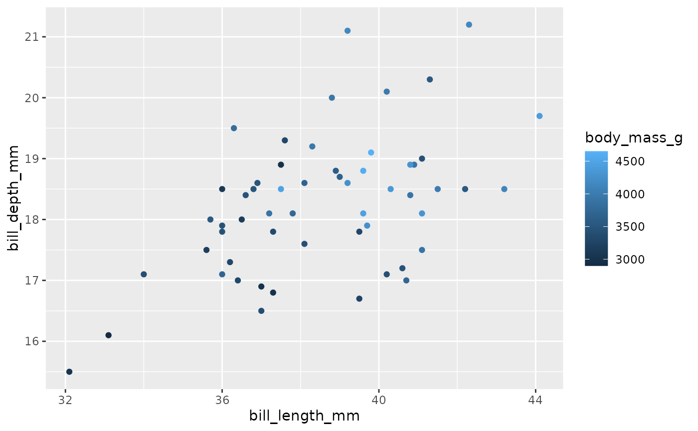
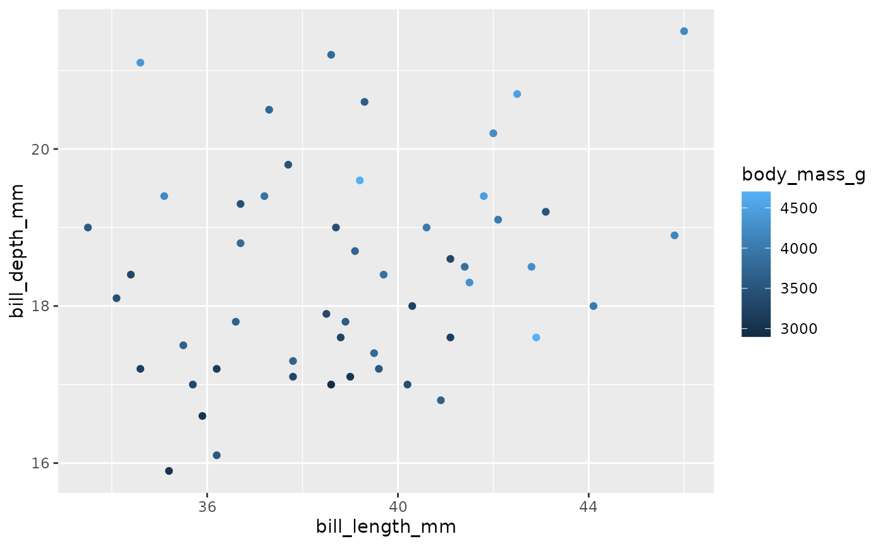
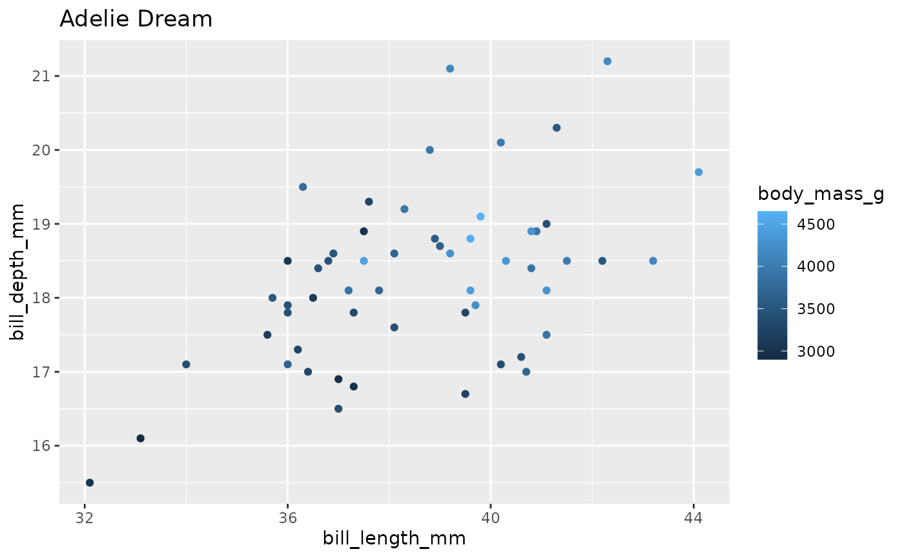
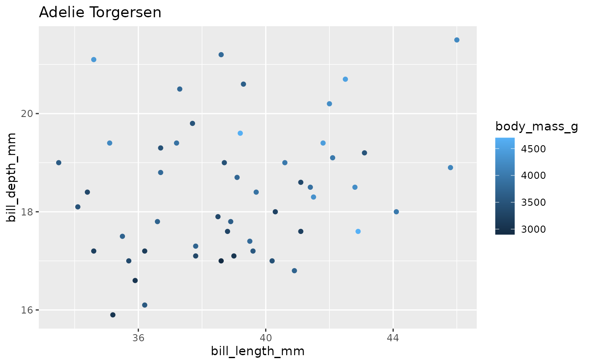
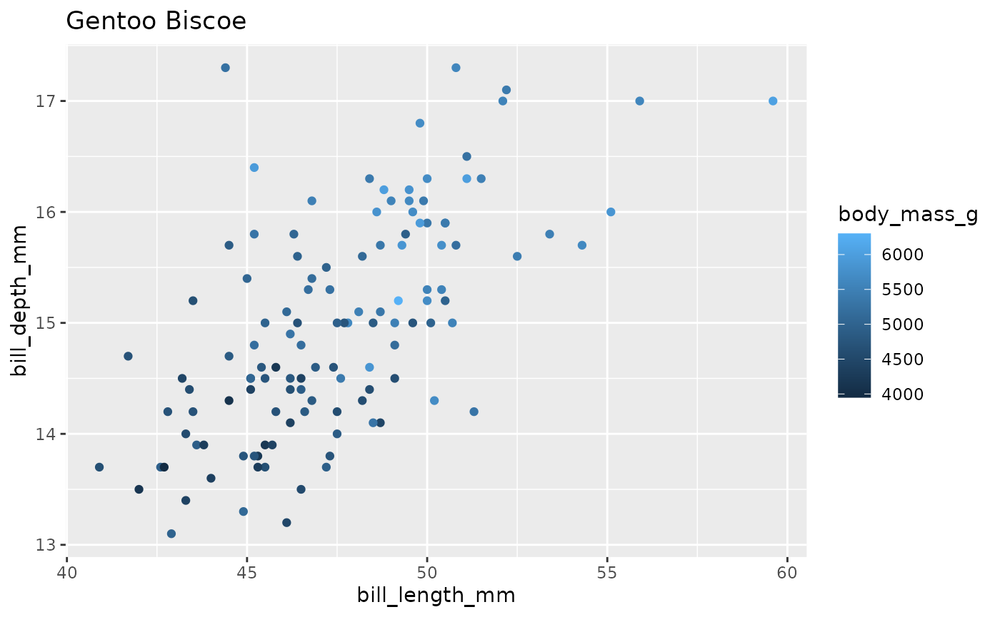

ezPurrr example
using-ezPurrr.Rmd
library(ezPurrr)
library(dplyr)
#>
#> Attaching package: 'dplyr'
#> The following objects are masked from 'package:stats':
#>
#> filter, lag
#> The following objects are masked from 'package:base':
#>
#> intersect, setdiff, setequal, union
library(tidyr)
library(ggplot2)A nested dataset is needed to use functions.
nest_df <- palmerpenguins::penguins %>%
group_by(island, species) %>%
nest()
head(nest_df)
#> # A tibble: 5 × 3
#> # Groups: island, species [5]
#> species island data
#> <fct> <fct> <list>
#> 1 Adelie Torgersen <tibble [52 × 6]>
#> 2 Adelie Biscoe <tibble [44 × 6]>
#> 3 Adelie Dream <tibble [56 × 6]>
#> 4 Gentoo Biscoe <tibble [124 × 6]>
#> 5 Chinstrap Dream <tibble [68 × 6]>
sample_*()
sample_row()
sample_row() returns one random or one particular row (with index argument) from the nested data as a list or a data frame. If returning a list (default), one row of the nested data will the first item of the list, and each of the other grouping variables will be another item in the list. If returning a data frame (with type = df argument), then the data frame will include one row of the nested data, as well as each grouping variable as a column with identical repeated content.
# In here, species and island are the grouping variables.
nest_df %>% sample_row()
#> row 2 is selected randomly
#> $data
#> # A tibble: 44 × 6
#> bill_length_mm bill_depth_mm flipper_length_mm body_mass_g sex year
#> <dbl> <dbl> <int> <int> <fct> <int>
#> 1 37.8 18.3 174 3400 female 2007
#> 2 37.7 18.7 180 3600 male 2007
#> 3 35.9 19.2 189 3800 female 2007
#> 4 38.2 18.1 185 3950 male 2007
#> 5 38.8 17.2 180 3800 male 2007
#> 6 35.3 18.9 187 3800 female 2007
#> 7 40.6 18.6 183 3550 male 2007
#> 8 40.5 17.9 187 3200 female 2007
#> 9 37.9 18.6 172 3150 female 2007
#> 10 40.5 18.9 180 3950 male 2007
#> # … with 34 more rows
#>
#> $island
#> [1] Biscoe
#> Levels: Biscoe Dream Torgersen
#>
#> $species
#> [1] Adelie
#> Levels: Adelie Chinstrap Gentoo
nest_df %>% sample_row(index = 3) %>% head()
#> $data
#> # A tibble: 56 × 6
#> bill_length_mm bill_depth_mm flipper_length_mm body_mass_g sex year
#> <dbl> <dbl> <int> <int> <fct> <int>
#> 1 39.5 16.7 178 3250 female 2007
#> 2 37.2 18.1 178 3900 male 2007
#> 3 39.5 17.8 188 3300 female 2007
#> 4 40.9 18.9 184 3900 male 2007
#> 5 36.4 17 195 3325 female 2007
#> 6 39.2 21.1 196 4150 male 2007
#> 7 38.8 20 190 3950 male 2007
#> 8 42.2 18.5 180 3550 female 2007
#> 9 37.6 19.3 181 3300 female 2007
#> 10 39.8 19.1 184 4650 male 2007
#> # … with 46 more rows
#>
#> $island
#> [1] Dream
#> Levels: Biscoe Dream Torgersen
#>
#> $species
#> [1] Adelie
#> Levels: Adelie Chinstrap Gentoo
nest_df %>% sample_row(index = 3, type = 'df') %>% head()
#> # A tibble: 6 × 8
#> bill_length_mm bill_depth_mm flipper_length_mm body_mass_g sex year
#> <dbl> <dbl> <int> <int> <fct> <int>
#> 1 39.5 16.7 178 3250 female 2007
#> 2 37.2 18.1 178 3900 male 2007
#> 3 39.5 17.8 188 3300 female 2007
#> 4 40.9 18.9 184 3900 male 2007
#> 5 36.4 17 195 3325 female 2007
#> 6 39.2 21.1 196 4150 male 2007
#> # … with 2 more variables: group.island <fct>, group.species <fct>
sample_data()
sample_data() returns one random or one particular data column (with index argument) from the nested data with no grouping variables.
nest_df %>% sample_data()
#> row 3 is selected randomly
#> # A tibble: 56 × 6
#> bill_length_mm bill_depth_mm flipper_length_mm body_mass_g sex year
#> <dbl> <dbl> <int> <int> <fct> <int>
#> 1 39.5 16.7 178 3250 female 2007
#> 2 37.2 18.1 178 3900 male 2007
#> 3 39.5 17.8 188 3300 female 2007
#> 4 40.9 18.9 184 3900 male 2007
#> 5 36.4 17 195 3325 female 2007
#> 6 39.2 21.1 196 4150 male 2007
#> 7 38.8 20 190 3950 male 2007
#> 8 42.2 18.5 180 3550 female 2007
#> 9 37.6 19.3 181 3300 female 2007
#> 10 39.8 19.1 184 4650 male 2007
#> # … with 46 more rows
nest_df %>% sample_data(index = 3)
#> # A tibble: 56 × 6
#> bill_length_mm bill_depth_mm flipper_length_mm body_mass_g sex year
#> <dbl> <dbl> <int> <int> <fct> <int>
#> 1 39.5 16.7 178 3250 female 2007
#> 2 37.2 18.1 178 3900 male 2007
#> 3 39.5 17.8 188 3300 female 2007
#> 4 40.9 18.9 184 3900 male 2007
#> 5 36.4 17 195 3325 female 2007
#> 6 39.2 21.1 196 4150 male 2007
#> 7 38.8 20 190 3950 male 2007
#> 8 42.2 18.5 180 3550 female 2007
#> 9 37.6 19.3 181 3300 female 2007
#> 10 39.8 19.1 184 4650 male 2007
#> # … with 46 more rows
sample_group()
sample_group() returns one random or one particular grouping columns (with index argument) from the nested dataset with no data.
nest_df %>% sample_group()
#> row 4 is selected randomly
#> # A tibble: 1 × 2
#> # Groups: island, species [1]
#> species island
#> <fct> <fct>
#> 1 Gentoo Biscoe
nest_df %>% sample_group(index = 3)
#> # A tibble: 1 × 2
#> # Groups: island, species [1]
#> species island
#> <fct> <fct>
#> 1 Adelie Dream
broadcast()
broadcast()
You can use the sampling dataset to test the code you want to be applied for each row, such as figures or lm() models.
Plotting:
nest_df %>%
sample_data(index = 3) %>%
ggplot(aes(x = bill_length_mm,
y = bill_depth_mm,
color = body_mass_g)) +
geom_point()
Then, by wrapping it into a function, it can be easily broadcasted into each row of the nested dataset.
plotting <- function(data){
data %>% ggplot(aes(x = bill_length_mm,
y = bill_depth_mm,
color = body_mass_g)) +
geom_point()
}
broadcasted_df = nest_df %>% broadcast(plotting)
broadcasted_df$output[[1]]
#> Warning: Removed 1 rows containing missing values (geom_point).
You can also use it for modeling or other functions:
tmp_df = nest_df %>%
sample_data(index = 3)
lm(body_mass_g ~ bill_length_mm * bill_depth_mm, data = tmp_df)
#>
#> Call:
#> lm(formula = body_mass_g ~ bill_length_mm * bill_depth_mm, data = tmp_df)
#>
#> Coefficients:
#> (Intercept) bill_length_mm
#> -2079.0346 92.6987
#> bill_depth_mm bill_length_mm:bill_depth_mm
#> 145.9699 -0.6616
modeling <- function(data){
lm(body_mass_g ~ bill_length_mm + bill_depth_mm, data = data)
}
nest_df %>% broadcast(modeling) %>% .$output
#> [[1]]
#>
#> Call:
#> lm(formula = body_mass_g ~ bill_length_mm + bill_depth_mm, data = data)
#>
#> Coefficients:
#> (Intercept) bill_length_mm bill_depth_mm
#> -1161.63 47.79 163.14
#>
#>
#> [[2]]
#>
#> Call:
#> lm(formula = body_mass_g ~ bill_length_mm + bill_depth_mm, data = data)
#>
#> Coefficients:
#> (Intercept) bill_length_mm bill_depth_mm
#> -3015.76 86.27 183.06
#>
#>
#> [[3]]
#>
#> Call:
#> lm(formula = body_mass_g ~ bill_length_mm + bill_depth_mm, data = data)
#>
#> Coefficients:
#> (Intercept) bill_length_mm bill_depth_mm
#> -1622.93 80.87 120.41
#>
#>
#> [[4]]
#>
#> Call:
#> lm(formula = body_mass_g ~ bill_length_mm + bill_depth_mm, data = data)
#>
#> Coefficients:
#> (Intercept) bill_length_mm bill_depth_mm
#> -1452.12 57.64 252.96
#>
#>
#> [[5]]
#>
#> Call:
#> lm(formula = body_mass_g ~ bill_length_mm + bill_depth_mm, data = data)
#>
#> Coefficients:
#> (Intercept) bill_length_mm bill_depth_mm
#> -356.11 23.82 158.84Instead of a list, you can also make the output a number (double).
modeling <- function(data){
model = lm(body_mass_g ~ bill_length_mm + bill_depth_mm, data = data)
model$coefficients[2] # the slope for bill_length_mm
}
nest_df %>% broadcast(modeling) %>% .$output
#> [[1]]
#> bill_length_mm
#> 47.78764
#>
#> [[2]]
#> bill_length_mm
#> 86.27406
#>
#> [[3]]
#> bill_length_mm
#> 80.86942
#>
#> [[4]]
#> bill_length_mm
#> 57.64173
#>
#> [[5]]
#> bill_length_mm
#> 23.82257
broadcast_group()
broadcast_group() allows you to also use grouping variables in the function. It is still under develop so currently it only works in a more limited way. For example, you can include grouping variables as title for plots.
df = nest_df %>%
sample_row(index = 3, type = 'list')
plotting = function(data, species, island){
ggplot(data, aes(x = bill_length_mm,
y = bill_depth_mm,
color = body_mass_g)) +
geom_point() +
labs(title = paste(species, island))
}
plotting(df$data, df$species, df$island)
nest_df = nest_df %>% broadcast_group(plotting)
nest_df$output[[1]]
#> Warning: Removed 1 rows containing missing values (geom_point).
nest_df$output[[4]]
#> Warning: Removed 1 rows containing missing values (geom_point).